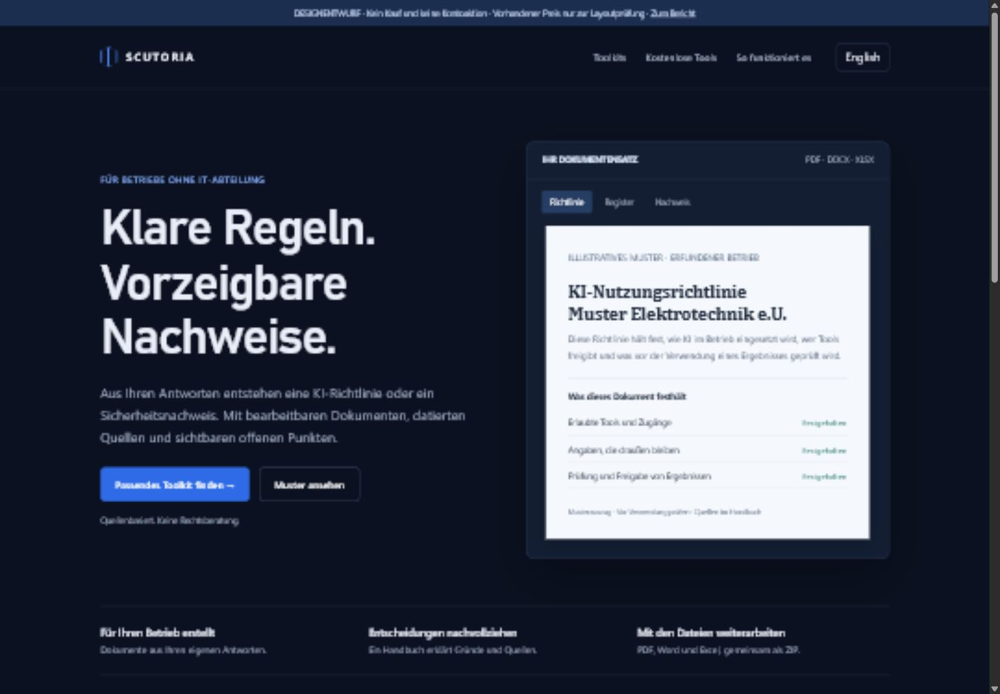
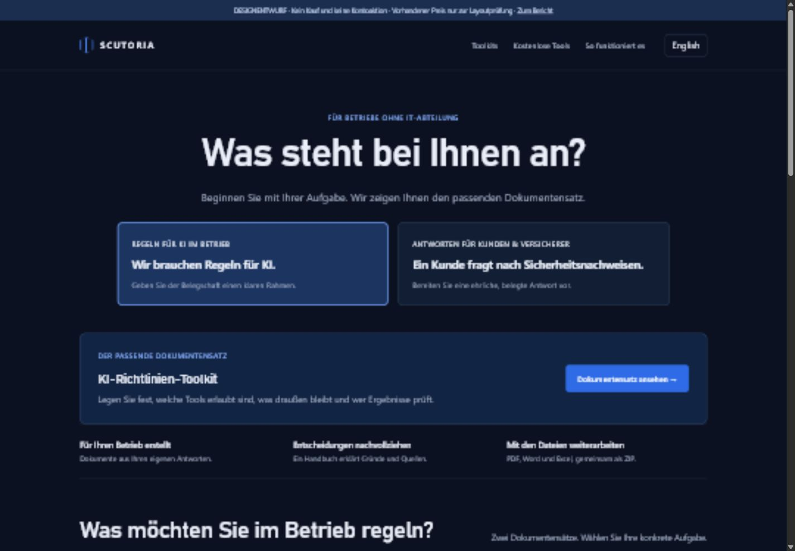
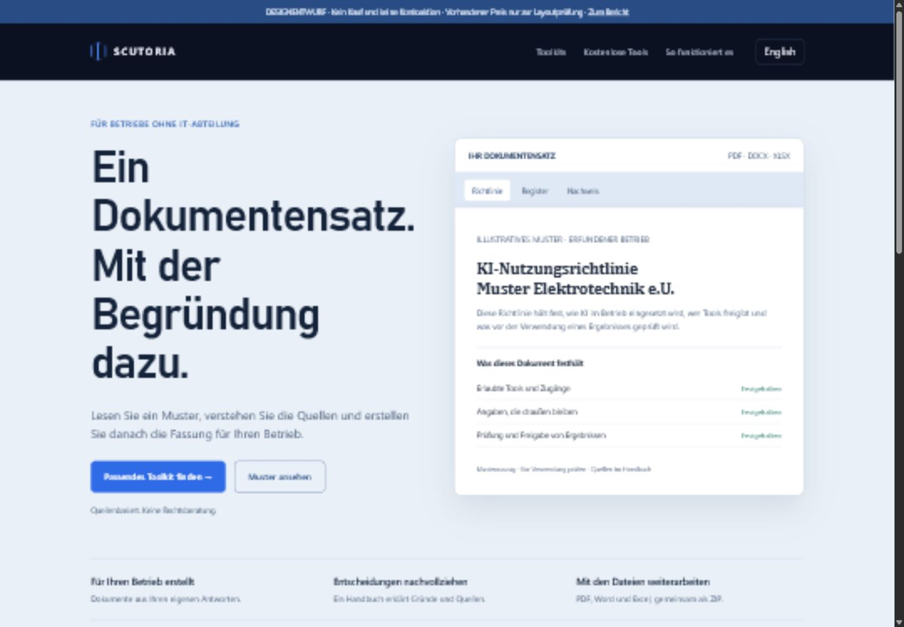

A · Klarer Produktauftritt
Meine Empfehlung als Basis. Bestehendes dunkles Farbsystem, konkreter Nutzen, ruhige Dokumentvorschau und zwei vergleichbare Produktkarten. Geringste visuelle Umstellung.
Deutsch öffnenEnglishKonkrete Änderungen, Prioritäten, Abnahmekriterien und drei bedienbare Designvarianten.
Die Marke braucht eine fertig geführte Produkterfahrung. Behalte die Farben und mache die Kundenaufgabe, das Ergebnis und den nächsten Schritt deutlicher.
Meine bevorzugte Richtung ist Variante A als visuelle Grundlage, ergänzt um die Bedarfsauswahl aus Variante B. Die helle Dokumentenfläche aus Variante C eignet sich besonders für Handbuch, Muster und Generatorausgabe.
| Etappe | Ergebnis | Abhängigkeit und Abnahme |
|---|---|---|
| Verkaufsbereitschaft | Kaufnavigation, Statuslogik, Datenschutzaussagen und reale Datenflüsse schließen. | F01, F02, F06, F07. Echte Zahlung und Zustellung erst im geeigneten Testmodus prüfen; Recht und Live-Freigabe durch Stefan. |
| Orientierung | Mobile Navigation, klare Produktauswahl, lesbare Dokumentvorschau und konsistente Texte. | F03, F08 bis F12, F15, F17. Reale Nutzer sollen Aufgabe und Produkt selbst zuordnen können. |
| Nachvollziehbarkeit | Originalquellen anklickbar, Ausgabe geprüft, Versionen und offene Punkte verständlich. | F05, F18. Fachliche Stichproben separat dokumentieren. |
| Veröffentlichung | Indexierung gezielt freigeben, Fehlerseiten und Sprachwechsel schließen, Browser- und Zugänglichkeitsprüfung. | F04, F13, F14, F16. Erst nach bewusster Entscheidung über den öffentlichen Betriebsstatus. |
Es werden keine Stunden- oder Umsatzschätzungen angegeben: Ohne Codeprüfung, Anbieterzugänge und Nutzungsdaten wären diese nicht belastbar.
Entwurf, noch nicht für die Veröffentlichung freigegeben:
Turn your answers into an AI policy or a security evidence pack. With editable documents, dated sources and visible open points.
Find your toolkit · Explore a sample
Aus Ihren Antworten entstehen eine KI-Richtlinie oder ein Sicherheitsnachweis. Mit bearbeitbaren Dokumenten, datierten Quellen und sichtbaren offenen Punkten.
Passendes Toolkit finden · Muster ansehen
Das bestehende Motto „Sourced. Dated. Ready to show.“ kann als Markenleitsatz erhalten bleiben. Die größere Überschrift sollte dem Erstbesucher stärker sagen, was er erhält.
Die Kernfarben stammen aus den berechneten Styles der bestehenden Seite, abgerufen 01.11.2026. Helle Dokumentflächen ergänzen die Marke, ohne sie umzubauen. In den Prototypen stehen Bahnschrift bzw. Systemschriften für Überschriften und Segoe UI für Lesetext; eine Serifenschrift erscheint nur im Dokumentbeispiel. Es werden keine externen Fonts geladen.

Meine Empfehlung als Basis. Bestehendes dunkles Farbsystem, konkreter Nutzen, ruhige Dokumentvorschau und zwei vergleichbare Produktkarten. Geringste visuelle Umstellung.
Deutsch öffnenEnglish
Für Besucher, die die Produktnamen noch nicht kennen. Zwei Situationen führen zum passenden Dokumentensatz. Die Auswahl ist im Prototyp bedienbar.
Deutsch öffnenEnglish
Navy-Kopfzeile und blaue Marke bleiben. Helle Inhaltsflächen machen längere Texte und Dokumente ruhiger lesbar. Größere Änderung des Gesamteindrucks.
Deutsch öffnenEnglishAlle drei Prototypen haben Sprachwechsel, mobile Navigation, Dokument-Tabs und Produktdetails. Sie sind responsive HTML-Dateien, keine veröffentlichten Shopänderungen. Dokumentvorschauen sind illustrative Entwürfe. Preise entsprechen dem sichtbaren Bestand und werden nicht neu festgelegt.
So ändern: Kaufnavigation in normalem Chrome und Firefox reproduzieren; CSP-Verstoß und Netzwerkantwort erfassen. Nur das notwendige Checkout-Ziel zulassen oder einen geeigneten servergestützten Checkout-Link verwenden. Keine pauschale Abschaltung der Sicherheitsrichtlinie. Bei Fehlern sichtbare Meldung mit erneutem Versuch.
Abnahme: Beide Produkte in EN und DE erreichen Stripe im Zielbrowser. Preis, Laufzeit und Produkt stimmen überein. Abbruch führt sinnvoll zurück; Fehlersimulation zeigt eine verständliche Meldung.
So ändern: Verbindlich zwischen öffentlicher Testphase und Verkaufsbetrieb entscheiden. Für Testphase Zugang und Beispieldaten klar erklären und Verkaufsaktionen passend begrenzen. Vor Verkaufsfreigabe tatsächliche Datenflüsse und Vertragsgrundlagen klären und Rechtstexte prüfen lassen. Danach konsistente Statusanzeigen.
Abnahme: Ein klarer Status auf Startseite, Produktseiten, Generator und Kasse. Keine offenen redaktionellen Platzhalter in veröffentlichten Pflichtinformationen. Rechts- und Veröffentlichungsfreigabe durch Stefan.
So ändern: Ein zugängliches mobiles Menü mit Produkte, kostenlose Tools, Handbücher und Konto einführen. Schließen, Escape, Fokusführung und aktiver Zustand berücksichtigen.
Abnahme: Alle Hauptziele sind bei schmalem Bildschirm mit Tastatur und Touch erreichbar. Keine horizontale Seitenverschiebung; der Kontozugang bleibt verfügbar.
So ändern: Indexierungsregeln je Umgebung festlegen. Bei Verkaufsfreigabe öffentliche Marketingseiten gezielt freigeben, private Ergebnisse und Konto ausschließen. Sitemap und Canonicals prüfen; Search Console anschließend mit echter URL-Prüfung nutzen.
Abnahme: Öffentliche Zielseiten sind crawlbar und enthalten kein unbeabsichtigtes noindex. Private Seiten bleiben geschützt. Keine Aussage über Rankings ohne Messung.
So ändern: Jede Quelle als anklickbaren Originalbeleg mit genauem Titel, Fundstelle, Dokumentdatum und Abrufdatum aufbereiten. Aussagen mit Quellen-IDs verbinden. Geänderte oder nicht mehr erreichbare Quellen sichtbar behandeln.
Abnahme: Jeder wesentliche Quellenverweis führt zum richtigen Primärdokument und zur nachvollziehbaren Fundstelle. Quellenstichproben werden fachlich gegengeprüft.
So ändern: Cookies und Datenflüsse in einem frischen Browser vollständig inventarisieren, Hosting- und Bot-Schutz-Konfiguration zuordnen und die tatsächliche Verarbeitung präzise dokumentieren. Die Formulierung „nur ein Cookie“ erst nach verifizierter Bestandsaufnahme verwenden.
Abnahme: Cookie- und Netzwerk-Inventar passen zur Datenschutzerklärung; jedes beobachtete System ist erklärt. Rechtliche Einordnung separat prüfen lassen.
So ändern: Betriebsnamen aus URLs entfernen. Für Ergebnisse kurzlebige und angemessen geschützte Referenzen oder eine andere geeignete Zustandsübergabe verwenden. Log-, Cache- und Referrer-Verhalten bewusst prüfen.
Abnahme: Ergebnisadressen enthalten keine freien Betriebs- oder Kontaktnamen. Datenschutztext beschreibt Anwendung und technische Übermittlung getrennt und zutreffend.
So ändern: Zwei Einstiege anbieten: Muster ansehen und eigenen Betrieb erfassen. Im eigenen Lauf Beispielwerte nur als Hilfetext zeigen; bewusste Bestätigung vor Übernahme. Vor Export Übersicht über übernommene, geänderte und offene Antworten.
Abnahme: Ein neuer echter Lauf erzeugt keine behaupteten Unternehmensmerkmale allein aus Musterdefaults. Vor Ausgabe muss der Nutzer die Zusammenfassung prüfen.
So ändern: Mit zwei Kundensituationen führen: KI im Betrieb regeln oder Sicherheitsfragebogen beantworten. Dokumentdetails dahinter staffeln. Fachbegriffe über konkrete Alltagssituationen erklären.
Abnahme: Im ersten Bildschirm sind Zielgruppe, Ergebnis und nächster Schritt klar. In einem Nutzertest können passende Besucher ihr Produkt ohne Erläuterung zuordnen.
So ändern: Startseite auf Auswahl, Ergebnisvorschau, Ablauf und Vertrauensbelege konzentrieren. Ausführliche Dokumentlisten und Quellenmethodik auf klar verlinkte Detailseiten verschieben.
Abnahme: Jeder Abschnitt beantwortet eine eigene Besucherfrage. Die primäre Handlung bleibt eindeutig; keine doppelte Darstellung ohne neue Information.
So ändern: Eine statische Dokumentvorschau mit manuell wählbaren Tabs und echtem Muster-PDF verwenden. Die Bewegung auf kurze, zweckmäßige Übergänge reduzieren. Pause- und Reduced-Motion-Unterstützung beibehalten.
Abnahme: Dokumenttitel, Beispielcharakter und wesentliche Inhalte sind ohne Bewegung lesbar. Alle Dokumente lassen sich bewusst öffnen und vergrößern.
So ändern: Kapitelanzeige mit aktuellem Abschnitt, Speicherhinweis mit tatsächlichem Speicherort, gezieltes Bearbeiten der Antworten und eine abschließende Prüfübersicht ergänzen. Handbuchlinks „Warum wir das fragen“ statt nur „2“ nennen. Dauer erst nach Messung echter Durchläufe nennen.
Abnahme: Besucher sehen, was gespeichert wurde und wie sie zurückkehren. Jede Antwort ist aus der Prüfübersicht erreichbar; Fehler erhalten eine konkrete Erklärung.
So ändern: Ergebniszustand beim Sprachwechsel sicher erhalten oder deutlich ankündigen, falls ein Neustart notwendig ist.
Abnahme: Die gleichen Antworten und das gleiche Ergebnis bleiben beim Wechsel EN/DE erhalten; die gewählte Sprache bleibt konsistent.
So ändern: Eine echte Fehlerseite mit kurzer Erklärung, Rückweg und Produkt- oder Toolauswahl gestalten.
Abnahme: Status 404 und sichtbare Meldung „Seite nicht gefunden“ stimmen überein. Keine Startseitenkopie als Fehlerinhalt.
So ändern: Leistungsumfang, Status, Zielgruppe und Ablauf zentral definieren und in beiden Sprachen konsistent ausspielen. Verfügbare und geplante Produkte sprachlich trennen.
Abnahme: Kein Widerspruch zu Lieferzeit, Zielgruppe oder Verfügbarkeit zwischen Startseite, Detailseite und Konto.
So ändern: Überschriftenstruktur, Sprunglink, Fokus nach Navigation, Statusmeldungen, Tastaturbedienung und Kontraste gezielt prüfen. Slidersteuerung für Hilfstechnologien verständlich benennen.
Abnahme: Alle Kernabläufe sind allein mit Tastatur ausführbar; Fokus bleibt sichtbar. Die Prüfung gegen definierte Kriterien ist dokumentiert, nicht nur ein automatischer Score.
So ändern: Badge im vorgesehenen Veröffentlichungsprozess entfernen, soweit der Plattformtarif das erlaubt. Vorschaubanner und interne Arbeitshinweise nur in der Testumgebung anzeigen.
Abnahme: Öffentliche Besucher sehen keine Editoraktion oder interne Projektkennzeichnung.
So ändern: Ein Referenzszenario je Zielgruppe fachlich prüfen, abweichende Antworten gezielt testen und alle Dokumente in den Zielanwendungen visuell abnehmen. Versionen und Quellenänderungen nachvollziehbar dokumentieren.
Abnahme: Keine widersprüchlichen Angaben zwischen Antworten und Ausgabe; bearbeitbare Dateien öffnen sauber in Word und Excel. Fachliche und visuelle Abnahme getrennt protokollieren.
Primärmaterial ist die ausgelieferte Website, insbesondere KI-Produktseite, Sicherheitsproduktseite, Datenschutzerklärung, Über-Seite, robots.txt und Sitemap. Abruf aller Belege: 01.11.2026.
Für die technische Einordnung: Google Search Central zu noindex und MDN zur CSP-Direktive form-action, abgerufen 01.11.2026. MDN beschreibt ausdrücklich Unterschiede zwischen Browsern bei Weiterleitungen nach Formularversand. Deshalb wird die CSP hier als Hypothese, nicht als bewiesene Ursache genannt.
Rohbelege: Crawl, Dateiprüfungen, Sicherheitsfragebogen, Memo-Testfälle. Preise, Fragen- und Seitenzahlen sind Bestandsangaben aus diesen Abrufen, keine neuen Festlegungen oder Zusagen. Fachliche Rechtsaussagen der Produkte wurden nicht vollständig gegen die Originalquellen freigegeben.